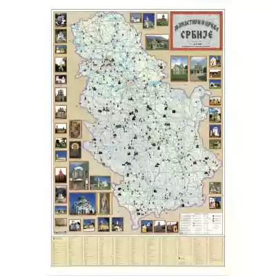
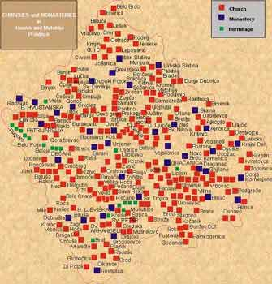

SRBIJA

Zbog arhitektonskih osobenosti, skulptoralnih ukrasa, fresaka, ikona, rukopisnih knjiga, brojnih dela primenjene umetnosti, manastiri Srbije privlače
pažnju i turista i stručnjaka za srednjovekovnu umetnost.
Arhitektura srpskih srednjovekovnih manastira pokazuje naročitu raznovrsnost. Tokom 13. i delom u 14. veku građene su reprezentativne crkve, u čijim
se proporcijama, dekorativnoj obradi fasada i u skulpturi oseća romanički uticaj, a one su (Studenica, Banjska, Dečani, Gradac, Arilje, Mileševa,
Sopoćani…) svrstane u rašku graditeljsku školu. Prvu polovinu 14. veka obeležila su izuzetna graditeljsko-slikarska ostvarenja podignuta u vreme
vladavine kralja Milutina (Gračanica).
Posle 1371. započinje poseban arhitektonski stil moravske graditeljske škole, sa polihromnim fasadama i dekorativnom plastikom, koji se razvio u dolini
Morave (Ravanica, Lazarica, Ljubostinja, Kalenić…).
Srednjovekovni manastiri i crkve nisu samo predeli Srbije, već predeli srpske duše, ali i svojevrsne slikarske galerije. Freske i ikone iz srpskih
crkava značajno su blago u kulturno-istorijskom nasleđu Srbije.
Jedna od najvećih srpskih pravoslavnih svetinja je Hilandar, srpski manastir koje se nalazi na severnom delu Svete Gore – monaške republike sa 20
velikih manastira, smeštenoj na trećem kraku poluostrva Halkidiki u severnoj Grčkoj. Manastir Hilandar podigao je 1198. Stefan Nemanja sa sinovima,
monahom Savom i Stefanom Prvovenčanim.
Na prostoru 50 km dužine i 10 km širine, na sremskoj planini Fruška gora, smešteno je 16 srpskih pravoslavnih manastira, podignuti u kasnom
srednjem veku, kada se težište srpske kulture pod naletom Turaka premestilo u ondašnju južnu Ugarsku. Ova jedinstvena kulturno-istorijska
celina proglašena je za kulturno dobro od izuzetnog značaja za Srbiju.
Većina manastira sagrađena je pod uticajem moravske i raške graditeljske škole, a vremenom su radikalno rekonstruisani. Prilikom obnove,
crkve su dobile visoke višespratne zvonike sa baroknim oblicima i plastikom, a u unutrašnjosti – velike i složene barokne ikonostase, koje
su oslikali najbolji srpski slikari tog vremena.
Burna istorija, arhitektonska i likovna lepota i naročito uloga duhovnog središta srpskog naroda, doprineli su velikom značaju fruškogorskih
manastira u kulturno-istorijskom nasleđu Srbije. Šire područje Fruške gore od davnina je bilo bogato svetilištima, a tokom 16. i 17. veka na
ovom prostoru je zabeleženo 35 manastira. Od vremena nastanka ovi manastiri nebrojeno puta su pljačkani, rušeni i napuštani, a najozbiljnije
su stradali tokom Drugog svetskog rata. Nekoliko manastira je teško oštećeno i tokom NATO bombardovanja 1999.
Od zapada ka istoku nalaze se manastiri: Privina Glava, Divša, Kuveždin, Petkovica, Šišatovac, Bešenovo, Mala Remeta, Beočin, Rakovac, Jazak,
Vrdnik, Staro Hopovo, Novo Hopovo, Grgeteg, Velika Remeta i Krušedol.
U dolini reke Ibra i Raške, od Kraljeva pa na jug do ispod Novog Pazara, rođena je srpska srednjovekovna država. Neki je, zato, zovu Dolinom kraljeva,
a drugi Dolinom jorgovana. Svakako, ovo je dolina sa nekim od najvrednijih srpskih srednjovekovnih manastira.
Kralj Uroš I Nemanjić (1243-1276) u znak dobrodošlice svojoj budućoj nevesti, francuskoj princezi Jeleni Anžujskoj, naredio je da se celom dolinom
Ibra, od Raške do Kraljeva, posade sve poznate vrste jorgovana. Tako je buduću srpsku kraljicu, ali i sveticu, dočekala Dolina jorgovana. cveća koje
je vesnik proleća. Danas se, početkom maja, tradicionalno održava narodno veselje poznato pod imenom Dani jorgovana.
Početak putovanja kroz Dolinu kraljeva je Kraljevo, jedan od znamenitih gradova središnje Srbije, koji je današnje ime dobio 1882. godine, kada je
obnovljena Srbija proglašena za kraljevinu, a kralj Milan Obrenović u obližnjem manastiru Žiča krunisan za prvog srpskog novovekovnog kralja. Manastir
Žiča predstavlja „majku svih crkava“, karakteristične crvene fasade, hram je u kome se za prvog srpskog kralja krunisao njen ktitor Stefan Prvovenčani.
U njoj će se, kaže legenda, krunisati još šest kraljeva i za svakog će biti otvorena a zatim i zazidana po jedna vrata, te otud potiče poetični naziv
„sedmovrata Žiča“.
Na uskom geografskom prostoru, u klisuri reke Zapadne Morave, smeštena je velika grupa manastira, u narodu nazvana „Srpska Sveta gora“. Većina manastira
je podignuta u vreme turske vlasti, kada su imali veliki istorijski i kulturno-umetnički značaj.
Najstariji pisani podaci o njima govore o intenzivnoj prepisivačkoj školi u 16. veku u manastirima, a Vuk Karadžić govori da su dva manastira
(Blagoveštenje i Jovanje) imala „kule za pisanje knjiga“. Ovčarsko-kablarski manastiri su bili značajno središte umetničke delatnosti, o čemu govori
činjenica da su sve crkve imale oslikane freske i oltarske pregrade u vidu ikonostasa, koji su delimično sačuvani.
Nije poznato koliko je nekada bilo manastira, a danas ih ima deset. Na levoj strani Zapadne Morave, pod Kablarom, su Blagoveštenje, Ilinje, Jovanje,
Nikolje i Uspenje, a pod Ovčarom su Vavedenje, Vaznesenje, Preobraženje, Sv. Trojica i Sretenje. Mnogi od manastira vremenom su prepravljani i
obnavljani. Usled gradnje pruge, Preobraženje je izmešteno na novu lokaciju, Jovanje je iznova zidano zbog izgradnje hidrocentrale Međuvršje,
Vaznesenje je znatno obnovljeno, a Ilinje i Uspenje su između dva svetska rada ponovo podignuti na starim mestima.
Najznačajniji manastiri (Blagoveštenje, Nikolje, Sretenje i Sv. Trojica) su stručno konzervirani i zaštićeni kao spomenici kulture od velikog značaja
za istoriju i kulturu Srbije.

Područje Autonomne Pokrajine Kosovo i Metohija na jugu Srbije sastoji se od dve kotline. Istočna kotlina je dobila ime po ptici kosu – Kosovo, a
zapadni deo teritorije bio je u srednjem veku prekriven metosima – crkvenim posedima Srpske pravoslavne crkve, odakle potiče naziv Metohija.
Teritorija današnje AP Kosovo i Metohija bila je središnji deo srpske srednjovekovne države u vreme njenog najvećeg procvata krajem 13. i početkom 14.
veka. Stoga su zadužbine srpskih vladara, vlastele i crkvenih velikodostojnika sačuvane na Kosovu i Metohiji u znatnom broju.
Vodeći gradovi Peć, Prizren i Priština predstavljali su značajne političke, crkvene i ekonomske centre, oko kojih je osnovana većina manastira. Kao
što su se gradovi razvijali na ostacima gradskih naselja antičkoga doba, tako su i brojne crkve podizane na starijim hrišćanskim kulturnim mestima,
što je često bio slučaj u Vizantiji i zemljama koje su joj gravitirale, a bile razvijene na ruševinama Rimske imperije.
Na UNESCO Listu svetske kulturne baštine četiri spomenika na Kosovu i Metohiji upisani su pod zajedničkim nazivom Srednjovekovni spomenici na Kosovu:
manastir Dečani (pojedinačno upisan 2004.), manastiri Pećka patrijaršija i Gračanica, kao i crkva Bogorodica Ljeviška u Prizrenu (2006).
Srpski srednjovekovni spomenici na Kosovu i Metohiji su od 2006. upisani i na UNESCO Listu svetske baštine u opasnosti, zbog nestabilne beѕbednosne
situacije koja vlada u toj srpskoj pokrajini, trenutno pod upravom UNMIK-a. Poseta manastirima i crkvama moguća je samo uz vojnu pratnju KFOR-a.
Tragični poraz srpske vojske od Turaka na Marici 1371. dvostruko se dalekosežno odrazio na dalju sudbinu i budućnost srpske države i njenog naroda.
Severne oblasti negdašnjeg carstva, koje su, posebno u doba prvih Nemanjića, bile zapostavljene pokrajine, dobile su u vreme kneza Lazara i despota
Stefana Lazarevića izuzetan značaj. One postaju centralni deo moravske Srbije i despotovine, gde se bez jačih tradicija i kulturnih tekovina razvija
nova umetnost, koja je po originalnosti izraza prevazišla relativno uske granice obnovljene države.
Moravska graditeljska škola, kao poslednja velika stilska epoha srpske srednjovekovne umetnosti, trajala je od 1371. do 1427.Mada, njeni odjeci mogu
da se prate sve do pada srpske nezavisnosti 1459. godine, kada zamiranjem umetničkog stvaranja iščezavaju njeni poslednji pravi oblici.
Na gotovo pustom i praznom prostoru Pomoravlja i susednih krajeva izrasla je umetnost koja je sintetizovala neka prethodna stvaralačka isustva
Vizantije i Srbije i pridodala im izvesne oznake autohtonog shvatanja, naročito u oblasti graditeljstva. Srbija, kao jedna od poslednjih slobodnih
pravoslavnih država Balkana, postala je oaza i stecište mnogih darovitih i umnih ljudi, među kojima su graditelji, slikari i književnici dali najveći
doprinos umetničkom i kulturnom preporodu.
U arhitekturi sakralnih spomenika moravske Srbije vaspostavlja se stari oblik trikonhosa (trolista), koji je preko Makedonije prenet iz Svete gore.
Rasopredom i stepenastim ritmovanjem masa ostvaruje se svojevrstan vertikalizam građevine, koju nadvišava jedino središnje kube ili pet kubeta –
centralno i ugaona. Fasade zidane kamenom i opekom, raščlanjene kordonskim vencima, arkadama i arhivoltama, ukrašene mešovito klesanim prepletima i
rozetama, keramoplastičnim lončićima i drugim reljefnim dekoracijama oko prozora i portala, moravskim crkavama i manastirima daju prefinjenost ukusa i
poetičnost osećanja majstora i naručioca ovih zdanja.